3．希尔伯特的工作
霍姆格伦（Erik Holmgren，1872年生）在1901年写的一本论述弗雷德霍姆积分方程工作的讲义（这本讲义已经在瑞典出版），引起了希尔伯特对这个课题的兴趣。希尔伯特（1862—1943），20世纪的领头数学家，在代数数、代数不变式和几何基础方面完成了宏伟的工作，现在他把他的注意力转到积分方程上来了。他说，这个科目的研究向他表明，它对于定积分理论、任意函数展为级数（展为特殊函数级数或三角级数）、线性微分方程理论、位势理论和变分法都是重要的。从1904年到1910年，他在《格丁根自然科学皇家学会报告》（Nachrichten von der Königlichen Gesellschaft der Wissenschaften zu Göttingen）上一连发表了六篇论文，并转载于他的书《线性积分方程一般理论的原理》（Grundzüge einer allgemeinen Theorie der linearen Integralgleichungen，1912）中。在这个工作的较后部分，他把积分方程应用到数学物理问题。
弗雷德霍姆曾经使用积分方程和线性代数方程之间的类似之处，但是他没有对无穷多个代数方程实现极限过程，而是直截了当地写出最后的行列式，并说明这些行列式把积分方程解出来了。希尔伯特的第一步工作就是在有限的线性方程组上严密地实现极限过程。
他从积分方程
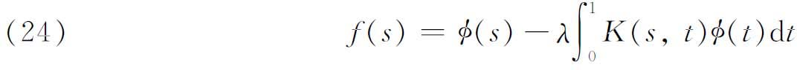
出发，其中K（s，t）是连续的。参数λ是明白表示出来的，而且在后续理论中起着重要作用。像弗雷德霍姆一样，希尔伯特把区间［0，1 ］分成n等分，使得
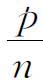
或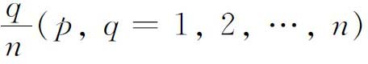
表示［0，1］中的点。令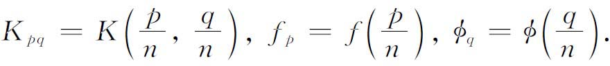
于是由（24）得到含n个未知数
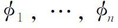
的n个方程，就是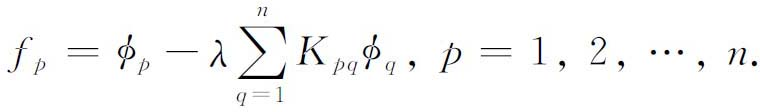
在回顾了n个未知数n个线性方程的有限线性方程组的解的理论之后，希尔伯特就着手研究方程（24）。对于（24）的核K，特征值是用幂级数
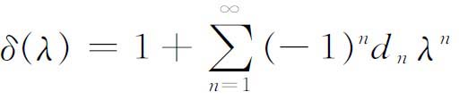
的零点来定义的，其中系数
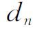
由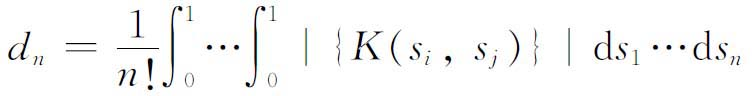
给出。这里
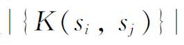
是n×n矩阵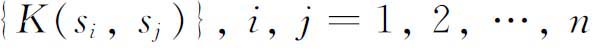
的行列式，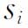
是区间［0，1］中t的值。为了简单地陈述希尔伯特的主要结果，我们需要中间量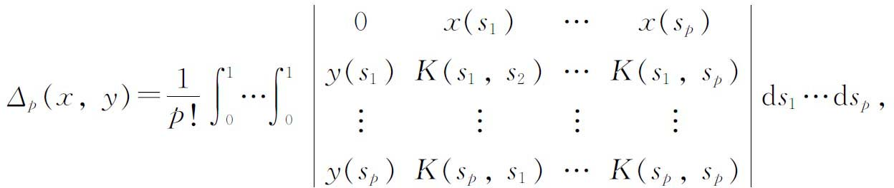
其中
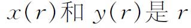
在［0，1］上的任意连续函数，此外还需要中间量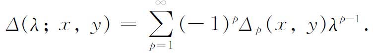
希尔伯特另外还定义
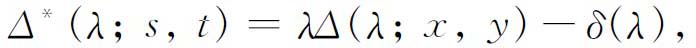
其中
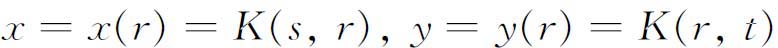
。然后他证明了如果对于使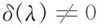
的那些λ值，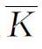
由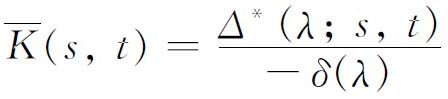
定义，那么
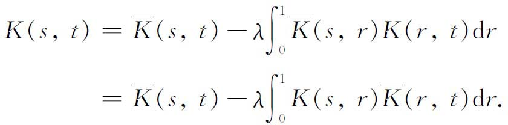
最后，若φ取作
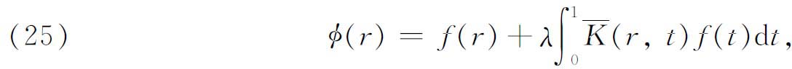
则φ是（24）的一个解。这个理论的各个步骤的证明，包含了一系列关于一类表达式的极限的研究，这些表达式出现在希尔伯特关于有限的线性方程组的处理方法中。
至此，希尔伯特证明了对于任何连续的（不一定是对称的）核K（s，t）和对于任何使δ（λ）≠0的λ，存在解函数（预解式）
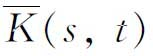
，使得（25）是方程（24）的解。现在，希尔伯特假设K（s，t）是对称的，这使他有可能使用有限阶对称矩阵的事实，从而证明δ（λ）的零点即对称核的特征值是实的。然后把δ（λ）的零点按绝对值增加的顺序排列起来（绝对值相等时可先取正的零点，而且要按重数排上）。现在（24）的特征函数用
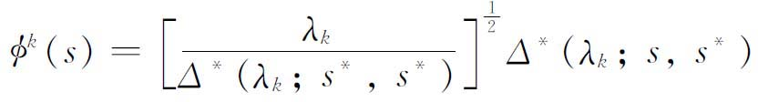
定义，其中s*的选取使得
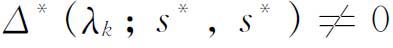
，而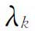
是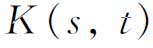
的任一特征值。相应于各个特征值的特征函数，可以取成标准正交（正交而标准化了的(13)）集，且对每个特征值
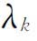
和每个属于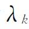
的特征函数都有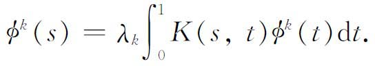
有了这些结果，希尔伯特就有可能证明相应于对称二次型的所谓广义主轴定理。
首先，令
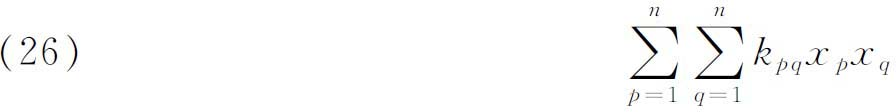
为n个变量
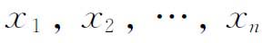
的一个n维二次型。这可以写成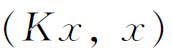
，其中K是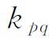
组成的矩阵，x是向量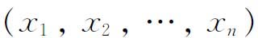
，而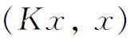
是两个向量Kx与x的内积（数量积）。设K有n个不同的特征值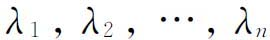
。于是对任何一个固定的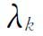
，方程组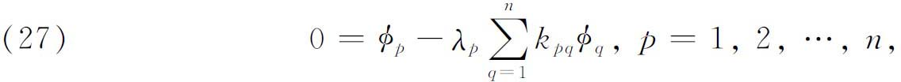
有解
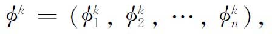
而且，若允许差一个常数倍，这解便是唯一的。因此，正如希尔伯特所证明的，可以得到
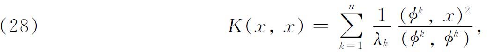
其中括号仍然表示向量的内积。
希尔伯特的广义主轴定理可叙述如下：设K（s，t）是s和t的连续对称函数。设
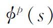
是属于积分方程（24）的特征值λp的特征函数，并且经过了标准化。那么对任意连续的x（s）和y（s），下面的关系式成立：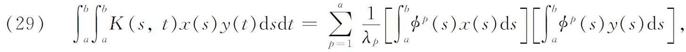
其中α＝n或∞，由特征值的数目决定。而在后一情形，级数对所有满足
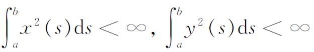
的
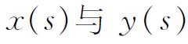
绝对一致收敛。（29）是（28）的推广是很明显的，如果我们先把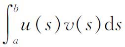
定义为两个函数u（s）与v（s）的内积，并用（u，v）表示。然后用x（s）代替（29）中的y（s），并且用积分来代替（28）左边的和式。希尔伯特接着证明了一个有名的结果，后来称为希尔伯特-施密特定理。如果f（s）对某个连续的g（s）有
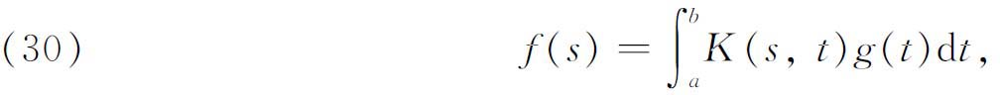
则
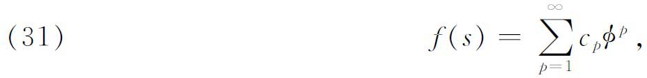
其中
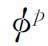
是K的标准正交特征函数，并且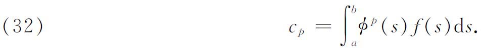
这样，一个“任意的”函数f（s），可以表示成K的特征函数的无穷级数，其系数cp正是展开式的傅里叶系数。
在前述工作中，希尔伯特在把有限线性方程和有限二次型的结果推广到积分和积分方程时，已经施行了极限过程。他认为，无穷二次型即带无穷多个变量的二次型本身的处理，将是“有限多个变量二次型熟知理论的不可缺少的完成。”他于是着手研究可以称之为纯粹代数问题的东西。他考虑无穷的双线性形式
通过对n个变量的二次型和2n个变量的双线性型取极限，得到了基本的结果。工作的细节是复杂的，我们只叙述某些结果。希尔伯特首先得到一个预解式的表达式，它的样子很独特，就是写成对应于λ的离散集的每一个值的表达式的和，以及在一个属于连续区域的λ集合上的积分。λ值的离散集属于K的点谱，连续集属于连续谱或带谱。这是连续谱的最早的有特殊意义的应用，连续谱是维尔丁格（Wilhelm Wirtinger，1865年生）在1896年对偏微分方程已观察到了的。(14)
为了找出二次型的关键结果，希尔伯特引入有界形式的概念。符号（x，x）表示向量和它自己的内积（数量积），（x，y）有类似的意义。相应地，形式K（x，y）称为有界的，如果对所有满足（x，x）≤1和（y，y）≤1的x和y都有。有界性隐含了连续性，后者是希尔伯特对无穷多个变量的函数定义的。
希尔伯特的关键结果，是把解析几何最平常的主轴定理推广到无穷多个变量的二次型。他证明，存在一个正交变换T，使得对新变量可以化为“平方和”。也就是说，每一个有界的二次型，都可以通过一个唯一的正交变换变换成
其中是K的特征值倒数。这个积分（我们将不进一步讲述）是在特征值的一个连续区域或连续谱上进行的。
为了排除连续谱，希尔伯特引入全连续的概念。一个具无穷多个变量的函数称为在是全连续的，如果
其中可以取遍，使
的任何数组。这较希尔伯特以前引进的连续性是要求更强的。
为要二次型K（x，x）是全连续的，只要。有了全连续的要求，希尔伯特就能够证明，如果K是一个全连续的有界形式，那么通过一个正交变换，可以把它化为
其中是特征值倒数，满足条件有限。
现在，希尔伯特就把他的无限多个变量的二次型理论运用到积分方程。在许多情况下，结果并不是新的，但是用较为清楚和简单的方法得到的。希尔伯特着手积分方程的这项新的工作，是通过定义完备正交系这一重要概念开始的。这是一列函数，都在［a，b］上定义并且连续，还具有下列性质：
（a）正交性：
（b）完备性：对每一对定义在［a，b］上的函数u和v，都有
数值
称为u（s）关于函数系的傅里叶系数。
希尔伯特证明，对于任意有穷区间［a，b］，都可以（例如用多项式）定义一个完备的正交系。然后，可以证明广义的贝塞尔不等式，并且可以证明，条件
和完备性等价。
现在，希尔伯特转到积分方程
核K（s，t）不必是对称的，但利用系数
展成了二重“傅里叶”级数．这就推出
此外，如果
即是f（s）的“傅里叶”系数，那么。
接着，希尔伯特把上述积分方程化为一组带无穷多个未知量的无穷多个线性方程。把φ（s）的积分方程的求解看成找φ（s）的“傅里叶”系数问题。用表示尚属未知的系数，他得到下面的线性方程组：
他证明，如果这个方程组有唯一解，那么积分方程就有唯一的连续解，并且当相应于（36）的齐次线性方程组有n个线性无关解时，则相应于（35）的齐次积分方程
有n个线性无关解。这时，原来的非齐次积分方程有解，当且仅当，，满足条件
其中是转置齐次方程
的n个线性无关解，当（37）有n个解时，它们也是存在的。这样，就得到了弗雷德霍姆择一定理：或者方程
对一切f都有唯一解，或者相应的齐次方程有n个线性无关解。在后一情况，（39）有解当且仅当正交性条件（38）得到满足。
接着，希尔伯特转到特征值问题
现在K是对称的。K的对称性蕴含着它的“傅里叶”系数确定一个全连续的二次型K（x，x）。他证明存在一个正交变换T使得
其中是二次型K（x，x）的特征值倒数。核K（s，t）的特征函数现在定义为
其中是T的矩阵元素，是一已知的完备标准正交集。可以证明［和不同］形成一标准正交集，并且满足
其中。这样，希尔伯特又重新证明了对于（40）的齐次情形，以及对于和（40）的核K（s，t）相联系的二次型K（x，x）的每一个有穷特征值，都存在特征函数。
现在希尔伯特再次建立了（希尔伯特-施密特定理）如果f（s）是任一连续函数，对于它存在g使得
那么f（s）可以表示为K的特征函数的级数，这级数一致且绝对收敛［看（31）式］。希尔伯特用这个结果去证明，相应于（40）的齐次方程除了在特征值之外没有非平凡解。因此，弗雷德霍姆择一定理取下述形式：对，方程（40）有唯一解；对，方程（40）有解当且仅当个条件
被满足，其中是相应于的个特征函数。最后，他又重新证明了主轴定理的推广：
其中u（s）是任意（连续）函数，并且在这里相应于任一的全体φp都包含在求和之中。
希尔伯特的这一较晚的工作（1906）不用弗雷德霍姆的无穷阶行列式。在这个工作中，他直接证明了积分方程和完备正交系理论以及函数在这种正交系中的展开式之间的关系。
希尔伯特把他关于积分方程的结果应用到各种几何和物理问题。特别地，他在六篇文章的第三篇里解决了黎曼问题：构造一个在由光滑曲线围成的区域里解析的函数，它的边值的实部或者虚部是已知的，或者实部与虚部是用一线性方程联系着的。
希尔伯特的工作中最有价值的成就之一，发表在1904年和1905年的论文中，把微分方程的斯图姆-刘维尔边值问题化成了积分方程。希尔伯特的结果说，微分方程
满足边界条件
（甚至更一般的边界条件）的特征值和特征函数，恰恰是
的特征值和特征函数，其中是（41）的格林函数，也就是
的特解，它满足一定的可微性条件，并且它的一阶偏微商在x＝ξ有等于－1／p（ξ）的奇性跳跃。类似的结果对偏微分方程也成立。这样，积分方程成了解常微分方程和偏微分方程的一种方法。
现在扼要地重述一下希尔伯特的重大成果。首先是他对于对称核K建立了一般的谱理论。仅仅在20年前，人们为了证明膜的最低振动频率的存在，还得尽很大的数学上的努力（第28章第8节）。有了积分方程，频率和真正的特征函数的整个序列的存在，在对振动介质作十分一般的假定下得到了构造性的证明。这些结果是首先由皮卡(15)运用弗雷德霍姆的理论得出来的。希尔伯特另一个值得注意的结果是，一个函数展成第二类积分方程的特征函数的展开式，取决于相应的第一类积分方程是否可解。特别地，希尔伯特发现，弗雷德霍姆方法的成功要依靠全连续的概念，而这是他引进到双线性形式并加以精深研究的。在这里他开创了双线性对称形式的谱理论。
在希尔伯特表明如何把微分方程的问题转化为积分方程之后，这个研究方法被愈来愈多地用来解决物理问题。在这里应用格林函数去实现转化成了一个重要的工具。还有，希尔伯特自己表明了(16)在空气动力学问题里，人们可以直接引出积分方程。这种直接求助于积分方程的办法是可能的，因为在某些物理问题中求和的概念证明是这样的基本，如同在另一些问题中导致微分方程的变化率概念那样。希尔伯特还强调，不仅常微分方程或偏微分方程，还有积分方程，是函数展成级数的必要和自然的出发点，而且通过微分方程得到的展开，恰好是积分方程理论中的一般定理的特殊情况。